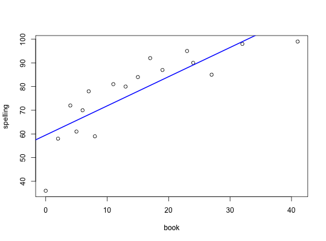

Data for Exercise 9.53
Books
A data frame with 17 observations on the following two variables.
Kitchens, L. J. (2003) Basic Statistics and Data Analysis. Duxbury
plot(spelling ~ book, data = Books)mod <- lm(spelling ~ book, data = Books) summary(mod)#> #> Call: #> lm(formula = spelling ~ book, data = Books) #> #> Residuals: #> Min 1Q Median 3Q Max #> -23.519 -4.684 3.083 7.122 11.520 #> #> Coefficients: #> Estimate Std. Error t value Pr(>|t|) #> (Intercept) 59.5186 3.8758 15.356 1.39e-10 *** #> book 1.2330 0.2081 5.926 2.78e-05 *** #> --- #> Signif. codes: 0 ‘***’ 0.001 ‘**’ 0.01 ‘*’ 0.05 ‘.’ 0.1 ‘ ’ 1 #> #> Residual standard error: 9.542 on 15 degrees of freedom #> Multiple R-squared: 0.7007, Adjusted R-squared: 0.6807 #> F-statistic: 35.11 on 1 and 15 DF, p-value: 2.784e-05 #> #>abline(mod, col = "blue", lwd = 2)